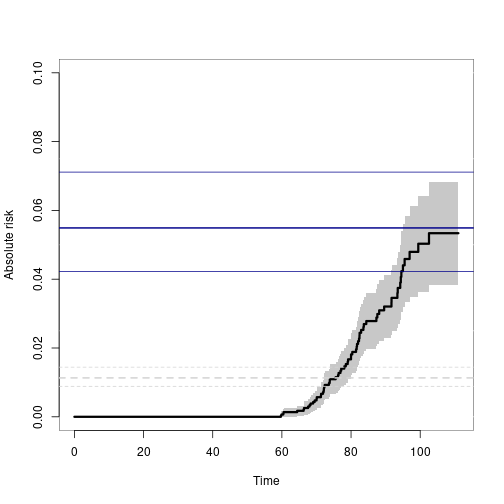

Implementation of various statistical models for multivariate event history data doi:10.1007/s10985-013-9244-x. Including multivariate cumulative incidence models doi:10.1002/sim.6016, and bivariate random effects probit models (Liability models) doi:10.1016/j.csda.2015.01.014. Modern methods for survival analysis, including regression modelling (Cox, Fine-Gray, Ghosh-Lin, Binomial regression) with fast computation of influence functions. Restricted mean survival time regression and years lost for competing risks. Average treatment effects and G-computation. All functions can be used with clusters and will work for large data.
Installation
install.packages("mets")The development version may be installed directly from github (requires Rtools on windows and development tools (+Xcode) for Mac OS X):
remotes::install_github("kkholst/mets", dependencies="Suggests")or to get development version
remotes::install_github("kkholst/mets",ref="develop")Citation
To cite the mets package please use one of the following references
Thomas H. Scheike and Klaus K. Holst and Jacob B. Hjelmborg (2013). Estimating heritability for cause specific mortality based on twin studies. Lifetime Data Analysis. http://dx.doi.org/10.1007/s10985-013-9244-x
Klaus K. Holst and Thomas H. Scheike Jacob B. Hjelmborg (2015). The Liability Threshold Model for Censored Twin Data. Computational Statistics and Data Analysis. http://dx.doi.org/10.1016/j.csda.2015.01.014
BibTeX:
@Article{,
title={Estimating heritability for cause specific mortality based on twin studies},
author={Scheike, Thomas H. and Holst, Klaus K. and Hjelmborg, Jacob B.},
year={2013},
issn={1380-7870},
journal={Lifetime Data Analysis},
doi={10.1007/s10985-013-9244-x},
url={http://dx.doi.org/10.1007/s10985-013-9244-x},
publisher={Springer US},
keywords={Cause specific hazards; Competing risks; Delayed entry;
Left truncation; Heritability; Survival analysis},
pages={1-24},
language={English}}
Examples: Twins Polygenic modelling
First considering standard twin modelling (ACE, AE, ADE, and more models)
ace <- twinlm(y ~ 1, data=d, DZ="DZ", zyg="zyg", id="id")
ace
## An AE-model could be fitted as
ae <- twinlm(y ~ 1, data=d, DZ="DZ", zyg="zyg", id="id", type="ae")
## LRT:
lava::compare(ae,ace)
## AIC
AIC(ae)-AIC(ace)
## To adjust for the covariates we simply alter the formula statement
ace2 <- twinlm(y ~ x1+x2, data=d, DZ="DZ", zyg="zyg", id="id", type="ace")
## Summary/GOF
summary(ace2)Examples: Twins Polygenic modelling time-to-events Data
In the context of time-to-events data we consider the “Liabilty Threshold model” with IPCW adjustment for censoring.
First we fit the bivariate probit model (same marginals in MZ and DZ twins but different correlation parameter). Here we evaluate the risk of getting cancer before the last double cancer event (95 years)
```{r} data(prt) prt0 <- force.same.cens(prt, cause=“status”, cens.code=0, time=“time”, id=“id”) prt0country, ref=“Sweden”) prt_wide <- fast.reshape(prt0, id=“id”, num=“num”, varying=c(“time”,“status”,“cancer”)) prt_time <- subset(prt_wide, cancer1 & cancer2, select=c(time1, time2, zyg)) tau <- 95 tt <- seq(70, tau, length.out=5) ## Time points to evaluate model in
b0 <- bptwin.time(cancer ~ 1, data=prt0, id=“id”, zyg=“zyg”, DZ=“DZ”, type=“cor”, cens.formula=Surv(time,status==0)~zyg, breaks=tau) summary(b0)
Liability threshold model with ACE random effects structure
```{r, label=liability_ace1, eval=fullVignette}
b1 <- bptwin.time(cancer ~ 1, data=prt0, id="id", zyg="zyg", DZ="DZ", type="ace",
cens.formula=Surv(time,status==0)~zyg, breaks=tau)
summary(b1)Examples: Twins Concordance for time-to-events Data
data(prt) ## Prostate data example (sim)
## Bivariate competing risk, concordance estimates
p33 <- bicomprisk(Event(time,status)~strata(zyg)+id(id),
data=prt, cause=c(2,2), return.data=1, prodlim=TRUE)
p33dz <- p33$model$"DZ"$comp.risk
p33mz <- p33$model$"MZ"$comp.risk
## Probability weights based on Aalen's additive model (same censoring within pair)
prtw <- ipw(Surv(time,status==0)~country+zyg, data=prt,
obs.only=TRUE, same.cens=TRUE,
cluster="id", weight.name="w")
## Marginal model (wrongly ignoring censorings)
bpmz <- biprobit(cancer~1 + cluster(id),
data=subset(prt,zyg=="MZ"), eqmarg=TRUE)
## Extended liability model
bpmzIPW <- biprobit(cancer~1 + cluster(id),
data=subset(prtw,zyg=="MZ"),
weights="w")
smz <- summary(bpmzIPW)
## Concordance
plot(p33mz,ylim=c(0,0.1),axes=FALSE, automar=FALSE,atrisk=FALSE,background=TRUE,background.fg="white")
axis(2); axis(1)
abline(h=smz$prob["Concordance",],lwd=c(2,1,1),col="darkblue")
## Wrong estimates:
abline(h=summary(bpmz)$prob["Concordance",],lwd=c(2,1,1),col="lightgray", lty=2)
Examples: Cox model, RMST
We can fit the Cox model and compute many useful summaries, such as restricted mean survival and stanardized treatment effects (G-estimation). First estimating the standardized survival
```{r} data(bmt); bmttime+runif(408)0.001 bmtcause!=0)1 dfactor(bmt) <- tcell.f~tcell
ss <- phreg(Surv(time,event)~tcell.f+platelet+age,bmt) summary(survivalG(ss,bmt,50))
sst <- survivalGtime(ss,bmt,n=50) plot(sst,type=c(“survival”,“risk”,“survival.ratio”)[1])
Based on the phreg we can also compute the
restricted mean survival time and years lost (via Kaplan-Meier estimates). The function does it
for all times at once and can be plotted as restricted mean survival or years lost at the different
time horizons
```{r}
out1 <- phreg(Surv(time,cause!=0)~strata(tcell,platelet),data=bmt)
rm1 <- resmean.phreg(out1,times=50)
summary(rm1)
par(mfrow=c(1,2))
plot(rm1,se=1)
plot(rm1,years.lost=TRUE,se=1)For competing risks the years lost can be decomposed into different causes and is based on the integrated Aalen-Johansen estimators for the different strata
{r} ## years.lost decomposed into causes drm1 <- cif.yearslost(Event(time,cause)~strata(tcell,platelet),data=bmt,times=10*(1:6)) par(mfrow=c(1,2)); plot(drm1,cause=1,se=1); title(main="Cause 1"); plot(drm1,cause=2,se=1); title(main="Cause 2") summary(drm1)
Computations are again done for all time horizons at once as illustrated in the plot.
Examples: Cox model IPTW
We can fit the Cox model with inverse probabilty of treatment weights based on logistic regression. The treatment weights can be time-dependent and then mutiplicative weights are applied (see details and vignette).
```{r} library(mets) data(bmt); bmttime+runif(408)0.001 bmtcause!=0)1 dfactor(bmt) <- tcell.f~tcell
ss <- phreg_IPTW(Surv(time,event)tcell.f+cluster(id),data=bmt,treat.model=tcell.fplatelet+age) summary(ss) head(iid(ss))
## Examples: Competing risks regression, Binomial Regression
We can fit the logistic regression model at a specific time-point with IPCW adjustment
```{r}
data(bmt); bmt$time <- bmt$time+runif(408)*0.001
# logistic regresion with IPCW binomial regression
out <- binreg(Event(time,cause)~tcell+platelet,bmt,time=50)
summary(out)
head(iid(out))
predict(out,data.frame(tcell=c(0,1),platelet=c(1,1)),se=TRUE)Examples: Competing risks regression, Fine-Gray/Logistic link
We can fit the Fine-Gray model and the logit-link competing risks model (using IPCW adjustment). Starting with the logit-link model
```{r} data(bmt) bmttime+runif(nrow(bmt))*0.01 bmt$id <- 1:nrow(bmt)
## logistic link OR interpretation or=cifreg(Event(time,cause)~strata(tcell)+platelet+age,data=bmt,cause=1) summary(or) par(mfrow=c(1,2)) ## to see baseline plot(or)
# predictions nd <- data.frame(tcell=c(1,0),platelet=0,age=0) pll <- predict(or,nd) plot(pll)
Similarly, the Fine-Gray model can be estimated using IPCW adjustment
```{r}
## Fine-Gray model
fg=cifreg(Event(time,cause)~strata(tcell)+platelet+age,data=bmt,cause=1,propodds=NULL)
summary(fg)
## baselines
plot(fg)
nd <- data.frame(tcell=c(1,0),platelet=0,age=0)
pfg <- predict(fg,nd,se=1)
plot(pfg,se=1)
## influence functions of regression coefficients
head(iid(fg))and we can get standard errors for predictions based on the influence functions of the baseline and the regression coefiicients (these are used in the predict function)
{r} baseid <- iidBaseline(fg,time=40) FGprediid(baseid,nd)
further G-estimation can be done
{r} dfactor(bmt) <- tcell.f~tcell fg1 <- cifreg(Event(time,cause)~tcell.f+platelet+age,bmt,cause=1,propodds=NULL) summary(survivalG(fg1,bmt,50))
Examples: Marginal mean for recurrent events
We can estimate the expected number of events non-parametrically and get standard errors for this estimator
```{r} data(hfactioncpx12) dtable(hfactioncpx12,~status)
gl1 <- recurrentMarginal(Event(entry,time,status)~strata(treatment)+cluster(id),hfactioncpx12,cause=1,death.code=2) summary(gl1,times=1:5) plot(gl1,se=1)
## Examples: Ghosh-Lin for recurrent events
We can fit the Ghosh-Lin model for the expected number of events observed
before dying (using IPCW adjustment and get predictions)
```{r}
data(hfactioncpx12)
dtable(hfactioncpx12,~status)
gl1 <- recreg(Event(entry,time,status)~treatment+cluster(id),hfactioncpx12,cause=1,death.code=2)
summary(gl1)
## influence functions of regression coefficients
head(iid(gl1))and we can get standard errors for predictions based on the influence functions of the baseline and the regression coefiicients
{r} nd=data.frame(treatment=levels(hfactioncpx12$treatment),id=1) pfg <- predict(gl1,nd,se=1) summary(pfg,times=1:5) plot(pfg,se=1)
The influence functions of the baseline and regression coefficients at a specific time-point can be obtained
{r} baseid <- iidBaseline(gl1,time=2) dd <- data.frame(treatment=levels(hfactioncpx12$treatment),id=1) GLprediid(baseid,dd)
Examples: Fixed time modelling for recurrent events
We can fit a log-link regression model at 2 years for the expected number of events observed before dying (using IPCW adjustment)
```{r} data(hfactioncpx12)
e2 <- recregIPCW(Event(entry,time,status)~treatment+cluster(id),hfactioncpx12,cause=1,death.code=2,time=2) summary(e2) head(iid(e2))
## Examples: Regression for RMST/Restricted mean survival for survival and competing risks using IPCW
RMST can be computed using the Kaplan-Meier (via phreg) and the for competing
risks via the cumulative incidence functions, but we can also get these
estimates via IPCW adjustment and then we can do regression
```{r}
### same as Kaplan-Meier for full censoring model
bmt$int <- with(bmt,strata(tcell,platelet))
out <- resmeanIPCW(Event(time,cause!=0)~-1+int,bmt,time=30,
cens.model=~strata(platelet,tcell),model="lin")
estimate(out)
head(iid(out))
## same as
out1 <- phreg(Surv(time,cause!=0)~strata(tcell,platelet),data=bmt)
rm1 <- resmean.phreg(out1,times=30)
summary(rm1)
## competing risks years-lost for cause 1
out1 <- resmeanIPCW(Event(time,cause)~-1+int,bmt,time=30,cause=1,
cens.model=~strata(platelet,tcell),model="lin")
estimate(out1)
## same as
drm1 <- cif.yearslost(Event(time,cause)~strata(tcell,platelet),data=bmt,times=30)
summary(drm1)Examples: Average treatment effects (ATE) for survival or competing risks
We can compute ATE for survival or competing risks data for the probabilty of dying
{r} bmt$event <- bmt$cause!=0; dfactor(bmt) <- tcell~tcell brs <- binregATE(Event(time,cause)~tcell+platelet+age,bmt,time=50,cause=1, treat.model=tcell~platelet+age) summary(brs) head(brs$riskDR.iid) head(brs$riskG.iid)
or the the restricted mean survival or years-lost to cause 1
```{r} out <- resmeanATE(Event(time,event)tcell+platelet,data=bmt,time=40,treat.model=tcellplatelet) summary(out) head(outriskG.iid)
out1 <- resmeanATE(Event(time,cause)~tcell+platelet,data=bmt,cause=1,time=40, treat.model=tcell~platelet) summary(out1)
Here event is 0/1 thus leading to restricted mean and cause taking the values 0,1,2 produces
regression for the years lost due to cause 1.
## Examples: While Alive estimands for recurrent events
We consider an RCT and aim to describe the treatment effect via while alive estimands
```{r}
data(hfactioncpx12)
dtable(hfactioncpx12,~status)
dd <- WA_recurrent(Event(entry,time,status)~treatment+cluster(id),hfactioncpx12,time=2,death.code=2)
summary(dd)
dd <- WA_recurrent(Event(entry,time,status)~treatment+cluster(id),hfactioncpx12,time=2,
death.code=2,trans=.333)
summary(dd,type="log")